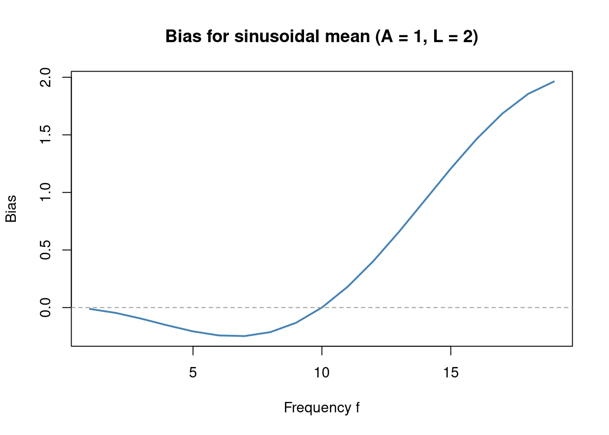
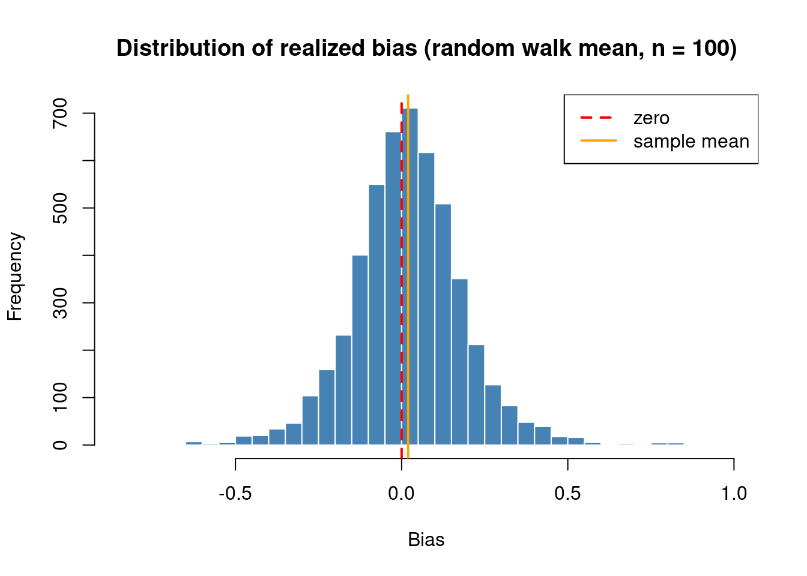

Every symmetric circulant \(A = \operatorname{circ}(a)\) is diagonalized by the DFT matrix \(F \in \mathbb{C}^{n \times n}\),
\[
A = F^* \Lambda F,
\]
where \(F_{jk} = \frac{1}{\sqrt{n}} \omega^{jk}\), \(\omega = e^{-2\pi i/n}\), and \(\Lambda = \operatorname{diag}(\lambda_0, \ldots, \lambda_{n-1})\). The eigenvalues are the DFT of the first row:
Since \(A\) is real and symmetric, the eigenvalues are real and satisfy \(\lambda_j = \lambda_{n-j}\).
Because \(F\) is unitary (\(F F^* = I\)), the decomposition \(A = F^* \Lambda F\) is exactly the eigendecomposition \(A = Q \Lambda Q^{-1}\) with \(Q = F^*\). The columns of \(F^*\) are the eigenvectors of \(A\): the \(j\)-th eigenvector is \(f_j = \frac{1}{\sqrt{n}}(1, \omega^{-j}, \omega^{-2j}, \ldots, \omega^{-(n-1)j})^T\), a complex sinusoid at frequency \(j/n\).
DFT and eigendecomposition are the same thing for circulants
devtools::load_all("~/Documents/Research/Code/ECE")library(testthat)n <-8a <-ece_first_row(n, L =2)A <-circ(a) / n# Eigendecompositioned <-eigen(A)# DFT matrix: F[j,k] = (1/sqrt(n)) * exp(-2*pi*i*j*k/n), 0-indexedj <-0:(n -1)k <-0:(n -1)F_mat <-exp(-2i * pi *outer(j, k) / n) /sqrt(n)test_that("columns of F* are eigenvectors of A", {# A = F* Lambda F => A F* = F* Lambda# Each column of F* should satisfy A v = lambda v Q <-Conj(t(F_mat)) # F*, columns are eigenvectors AQ <- A %*% Q QD <- Q %*%diag(fft(a) / n) # eigenvalues = fft(a)/n for scaled Aexpect_equal(Re(AQ), Re(QD), tolerance =1e-10)expect_equal(Im(AQ), Im(QD), tolerance =1e-10)})
Test passed 🎊
test_that("eigenvalues of A equal fft(a)/n", { lambda_fft <-sort(Re(fft(a) / n)) lambda_eig <-sort(Re(ed$values))expect_equal(lambda_fft, lambda_eig, tolerance =1e-10)})
Test passed 😸
Spectral representation of the bias. Using the eigendecomposition \(A = Q\Lambda Q^*\) with \(Q = F^*\),
where \(\tilde{\theta} = Q^*\theta\) are the coordinates of \(\theta\) in the eigenbasis.
Under correct specification (\(\theta \in \Theta_L\)), the \(j = 0\) term vanishes because \(\lambda_0 = 0\) always — the DC eigenvalue is zero since \(\sum_k a_k = 0\) by the block-sum constraints. For \(j > 0\), neither \(\lambda_j\) nor \(\tilde{\theta}_j\) is zero in general; the sum cancels through structured pairwise cancellation across frequencies, a consequence of the block-sum constraints rather than anything visible in \(\lambda\) or \(\tilde{\theta}\) individually.
The spectral representation is most useful under misspecification. When \(\theta \notin \Theta_L\), the pairwise cancellation breaks down and the bias
\[
\theta_x^T A \theta_y = \sum_{j=0}^{n-1} \lambda_j\, \tilde{\theta}_{x,j}^*\, \tilde{\theta}_{y,j}
\]
is nonzero. Its magnitude depends on which eigenvalues \(\lambda_j\) are large and how much energy \(\tilde{\theta}_x\), \(\tilde{\theta}_y\) place at the corresponding frequencies.
6.2 Closed-Form Bias
Since \(A = \sum_{k=1}^L c_k A_k\) with \(c_k = H_{1,k} = \frac{2L+1-3k}{nL(L-1)}\) (see Other Mathematical Results), the bias decomposes as
\[
\theta_x^T A \theta_y = \sum_{k=1}^L c_k\, T_k(\theta_x, \theta_y),
\]
where \(T_k(\theta_x, \theta_y) = \sum_{i=1}^n (\theta_{x,i} - \theta_{x,i+k})(\theta_{y,i} - \theta_{y,i+k})\) is the \(k\)-lagged cross-product of the mean vectors. For \(L = 2\) this reduces to
Spectral form of \(\lambda_j\). Applying the eigendecomposition of \(A_k\) — whose eigenvalues are \(4\sin^2(\pi jk/n)\) — gives a closed form for the eigenvalues of \(A\):
The bias is therefore controlled by \(\max_j |\lambda_j|\), which from the \(L=2\) formula is largest near the Nyquist frequency \(j = n/2\). Misspecification is most harmful when the mean vectors have energy concentrated at high frequencies.
6.3 Closed-Form Variance
The variance of \(X^T A Y\) is (see the Bilinear Form chapter):
The noise term \((\sigma_x^2\sigma_y^2 + \sigma_{xy}^2)\operatorname{tr}(A^2) = O(1/n)\) regardless of the mean. The signal-dependent terms involve \(\theta_x^T A^2 \theta_y\), which mirrors the bias with \(A\) replaced by \(A^2\).
The signal-dependent variance is controlled by the same Nyquist-dominated \(\max_j|\lambda_j|\) as the bias.
6.4 Case Study: Sinusoidal Mean
Suppose \(\theta_x = \theta_y = \theta\) with \(\theta_i = A\sin(2\pi fi/n)\) for integer frequency \(1 \leq f < n/2\) and amplitude \(A > 0\). This is misspecified since a sinusoid is not piecewise constant.
Using \(\sin^2(2\phi) = 4\sin^2(\phi)\cos^2(\phi)\) and the double-angle identity \(1 - 2\cos^2\phi = -\cos(2\phi)\),
\[
\theta^T A \theta = -2A^2\sin^2\!\left(\frac{\pi f}{n}\right)\cos\!\left(\frac{2\pi f}{n}\right).
\]
Interpretation. The bias depends on frequency and amplitude but not on phase. It is zero at \(f = 0\) (constant — well specified) and at \(f = n/4\) (where \(\cos(2\pi f/n) = 0\)), negative for \(f < n/4\), and positive for \(f > n/4\). It grows as \(A^2\) and is largest near the Nyquist frequency \(f = n/2\), consistent with the general bound \(|\text{bias}| \leq \max_j|\lambda_j| \cdot \|\theta\|_2^2\).
plot(freqs, bias_formula,type ="l", lwd =2, col ="steelblue",xlab ="Frequency f", ylab ="Bias",main ="Bias for sinusoidal mean (A = 1, L = 2)")abline(h =0, col ="grey60", lty =2)

Application to scenario 14. Scenario 14 sets \(\theta_i = \sin(2\pi i / 365)\) — a yearly cycle sampled at daily resolution. With \(n = 100\) observations, the signal has effective DFT bin \(j \approx n/365 \approx 0.27\), well below \(j = 1\). Since \(\lambda_j \approx 0\) near \(j = 0\), the formula predicts negligible bias: \(|\text{bias}| \approx 2\sin^2(\pi/365) \approx 1.5 \times 10^{-4}\) per unit amplitude squared. Numerically the bias is of order \(10^{-5}\), confirming that the ECE is effectively unbiased in this scenario despite the misspecification — the yearly cycle is too slow relative to the observation window to contaminate the estimate.
With \(n = 1000\) observations, the window covers approximately 2.7 full periods and the effective bin shifts to \(j \approx 2.74\). The bias is now \(\approx -1.6 \times 10^{-4}\) — negative since \(j < n/4 = 250\), and consistent with the formula prediction of \(-1.5 \times 10^{-4}\). Despite the larger signal (\(\|\theta\|^2 \approx 499\)), the bias remains negligible: the yearly cycle is still low-frequency relative to \(n\).
6.4.2 Variance
With \(\theta_x = \theta_y = \theta\), the closed-form variance simplifies to
Computing \(\theta^T A^2 \theta\). Since \(\theta_i = A\sin(2\pi fi/n)\) lies in the eigenspace of \(A\) at frequency \(f\) and \(\lambda_f = \lambda_{n-f}\), we have \(A\theta = \lambda_f\,\theta\). Therefore \(\theta^T A^2 \theta = \lambda_f^2\|\theta\|^2 = \frac{nA^2}{2}\lambda_f^2\).
For \(L = 2\). Substituting the \(L=2\) eigenvalue:
Suppose \(\theta_x = \theta_y = \theta\) where \(\theta_i = \sum_{j=1}^i \xi_j\) is a random walk with i.i.d. increments \(\xi_j \sim (0, \sigma^2)\). This corresponds to scenario 13.
Expected bias is \(O(1/n)\). Since \(\theta_i - \theta_{i+k} = \xi_{i+1} + \cdots + \xi_{i+k}\) is a sum of \(k\) independent increments,
so \(E[T_k(\theta,\theta)] = (n-k)k\sigma^2\), which is approximately linear in \(k\) for \(k \ll n\). Since the ECE is constructed to cancel exactly a linear trend in \(k \mapsto T_k\),
The expected bias vanishes asymptotically — the ECE is nearly unbiased in expectation for random walk means, even though random walks are not piecewise constant.
Spectral interpretation. The power spectral density of a random walk concentrates at low frequencies: \(E[|\tilde{\theta}_j|^2] \propto 1/\sin^2(\pi j/n)\). Combined with \(\lambda_j \propto -\cos(2\pi j/n)\sin^2(\pi j/n)\), the expected bias is proportional to \(\sum_j \cos(2\pi j/n) = 0\), confirming the result.
Individual realizations. While \(E[\theta^T A \theta] \approx 0\), each realization of the random walk produces a nonzero bias. The distribution of realized biases has mean \(\approx \sigma^2/n\) and standard deviation that grows with \(\sigma^2\).
devtools::load_all("~/Documents/Research/Code/ECE")library(testthat)n <-100; L <-2a <-ece_reg_row(n, L)A_mat <-circ(a) / nset.seed(42)B <-5000biases <-replicate(B, { theta <-cumsum(rnorm(n))as.numeric(t(theta) %*% A_mat %*% theta)})test_that("expected bias is close to sigma^2/n = 1/100", {expect_equal(mean(biases), 1/ n, tolerance =0.05)})
Test passed 😀
hist(biases,breaks =60, col ="steelblue", border ="white",main ="Distribution of realized bias (random walk mean, n = 100)",xlab ="Bias")abline(v =0, col ="red", lwd =2, lty =2)abline(v =mean(biases), col ="orange", lwd =2)legend("topright",legend =c("zero", "sample mean"),col =c("red", "orange"), lwd =2, lty =2:1)

6.6 Eigenvalue Visualization
Each eigenvalue \(\lambda_j = \sum_{k=0}^{n-1} a_k \omega^{jk}\) is a sum of \(n\) complex numbers. The plot below shows the individual terms \(a_k \omega^{jk}\) for \(k = 0, \ldots, n-1\) as arrows in the complex plane, for each \(j\). The red star marks the sum \(\lambda_j\), which is always real.
devtools::load_all("~/Documents/Research/Code/ECE")n <-10L <-2a <-ece_first_row(n, L)a[abs(a) <1e-10] <-0omega <-exp(-2i * pi / n)par(mfrow =c(2, 5), mar =c(3, 3, 2, 1))for (j in0:(n -1)) { k <-0:(n -1) terms <- a * omega^(j * k) lim <-max(abs(c(Re(terms), Im(terms))), 0.5) *1.3plot(Re(terms), Im(terms),xlim =c(-lim, lim), ylim =c(-lim, lim),xlab ="Re", ylab ="Im", asp =1,main =bquote(j == .(j) ~","~ lambda[.(j)] == .(round(Re(sum(terms)), 3))),pch =16, col ="steelblue" )abline(h =0, v =0, col ="grey80", lty =2)arrows(0, 0, Re(terms), Im(terms), length =0.07, col ="steelblue", lwd =1.2)points(Re(sum(terms)), Im(sum(terms)), pch =8, col ="red", cex =1.5, lwd =2)}